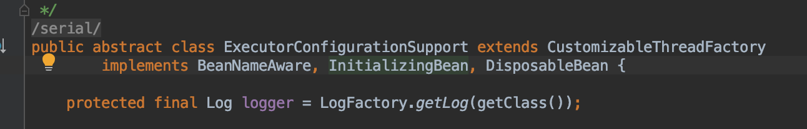
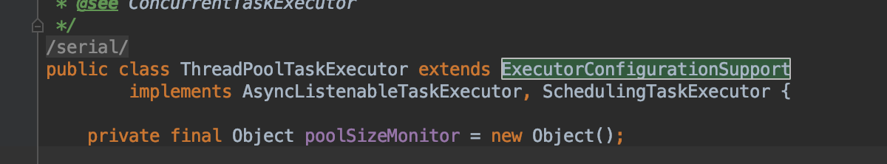
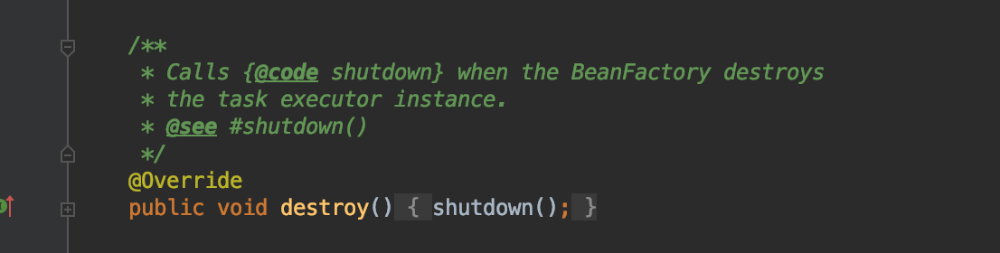
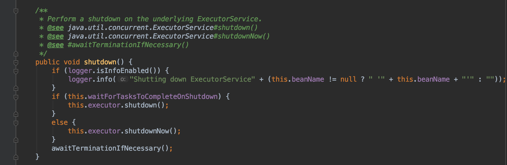

Spring 线程池（生命周期管理）
0x01 Spring Bean生命周期管理
Spring在管理Bean时除了依赖注入这一主要功能外，也提供了在项目启动初始化Bean和项目结束销毁Bean时的附加功能，这一功能对某些涉及到资源管理的Bean来说很有用，也就是本文要说的线程池。
Spring在初始化Bean之后和销毁Bean之前提供了进行一些自定义操作的入口，主要有一下几种方式：
1、注解方式，在方法上使用
@PostConstruct和@PreDestroy注解
1 |
|
2、注解方式，在
@Bean指定Bean的同时通过注解的属性initMethod和destroyMethod指定
1 |
|
3、xml配置，通过
<bean>的init-method和destroy-method属性指定
1 | <bean class="haocdp.spring.core.DemoService" init-method = "init" destroy-method = "destroy"/> |
4、通过实现
InitializingBean和DisposableBean接口实现初始化和销毁相关操作
1 | public class InitOrderBean implements InitializingBean,DisposableBean { |
需要注意的是第二种方式和第三种方式是同一种配置的不同实现方式，并与其他两种方式有所差异。
如果这几种方式同时存在，执行顺序如下：
实例化： Constructor -> @PostConstruct -> InitializingBean -> init-method
销毁： @PreDestroy -> DisposableBean -> destroy-method
这样顺序的具体原因与Spring Bean生命周期相关，本文就不做详细探讨，我也没有详细了解过。只需要知道这几种方式只是Spring提供的一些功能，方便进行一些附加操作。
0x02 线程池生命周期
之所以会关注到Spring Bean的生命周期问题，是因为在使用线程池时涉及到了线程池如何优雅关闭的问题，查看Spring线程池的源码时，看到了下面这部分代码：

这是Spring线程池的一个抽象父类代码，可以看到该类实现了上述的InitializingBean和DisposableBean接口，也就是说Spring管理线程池的生命周期是通过这种方式实现的。
对线程池比较熟悉的同学应该都知道线程池的基本配置和运行方式，这里不做详述。本文关注的是线程池的生命周期。线程池的状态一共有running、shutdown、stop、tidying和terminated。
| 状态 | 说明 |
|---|---|
| Running | 能接受提交新任务，也能处理阻塞队列中的任务 |
| Shutdown | 不能接受提交的新任务，但是能处理阻塞队列中的未完任务 |
| Stop | 不能接受新任务，也不能处理阻塞队列中的任务，并且会中断正在处理任务的线程 |
| Tidying | 如果所有的任务都终止了，有效线程数为0，会进入该状态 |
| Terminated | 工作线程数为0，工作队列任务数为0，由tidying状态进入，线程池彻底结束 |
线程池状态之间的转换关系如下：
| 状态转换 | 说明 |
|---|---|
| Running -> Shutdown | 调用线程池的shutdown()方法 |
| Running/Shutdown -> Stop | 调用线程池的shutdownNow()方法 |
| Shutdown -> Tidying | 阻塞队列为空，线程池工作线程数为0 |
| Stop -> Tidying | 线程池中工作线程数为0 |
| Tidying -> Terminated | 执行terminated()方法进入 |
从上述可以看出，Running状态下通过调用shutdown()/shutdownNow()进行状态转换，这是程序手动执行的，而Tidying状态是为了整理工作线程和阻塞队列，所以只要条件达到就会进入该状态。虽然进入Terminated状态需要调用terminated()方法，但是这是一个钩子方法，只要进入Tidying就会执行。
0x03 Spring 管理线程池
这里我们重点关注shutdown()和shutdownNow()方法，因为在工作过程中，调用不同的方法会造成不同的结果。先说一下工作中遇到的问题。
工作中经常会做一些耗时比较长的操作，比如发送邮件或者记录操作日志，这些操作通常是正常业务逻辑触发的一些附加功能。如果同步执行会造成正常操作反应时间过长的问题。所以需要另开线程进行操作。这时需要使用线程池。
1 | <bean id="targetExecutor" class="org.springframework.scheduling.concurrent.ThreadPoolTaskExecutor"> |
定义线程池，并在代码中执行：
1 | targetExecutor.execute(() -> addOperateLog(beforeEventInfo, eventInfo)); |
在正常的部署项目中，执行代码没有任何问题，任务提交到线程池中进行执行。但是在单元测试中执行就会有问题了。线程池的任务没有正常执行完毕。
通过分析正常部署项目和单元测试的差异，我们可以知道，正常部署项目中线程池的生命周期贯穿整个项目，只有服务停掉才会销毁线程池。但是单元测试主线程执行完就会关闭线程池，从而导致任务没有正常执行完毕。
这里涉及到了Spring Bean的生命周期管理。线程池的生命周期就是通过上述说到的自定义初始化和销毁操作进行管理。
查看线程池的代码：


可以看到线程池实现了InitializingBean和DisposableBean接口，因此当Spring容器关闭时就会调用destroy()方法

重点在shutdown方法中

通过查看这里的源码可以得知，调用shutdown()还是shutdownNow()方法取决于waitForTasksToCompleteOnShutdown参数。所以，如果改一下线程池的配置：
1 | <bean id="targetExecutor" class="org.springframework.scheduling.concurrent.ThreadPoolTaskExecutor"> |
那么线程池从Running状态会进入Shutdown，这是会等待已有的任务执行完毕再关闭线程池。单元测试就会正常执行了。
其中还有一个awaitTerminationSeconds参数是指等待线程池状态到Terminated的最长时间。